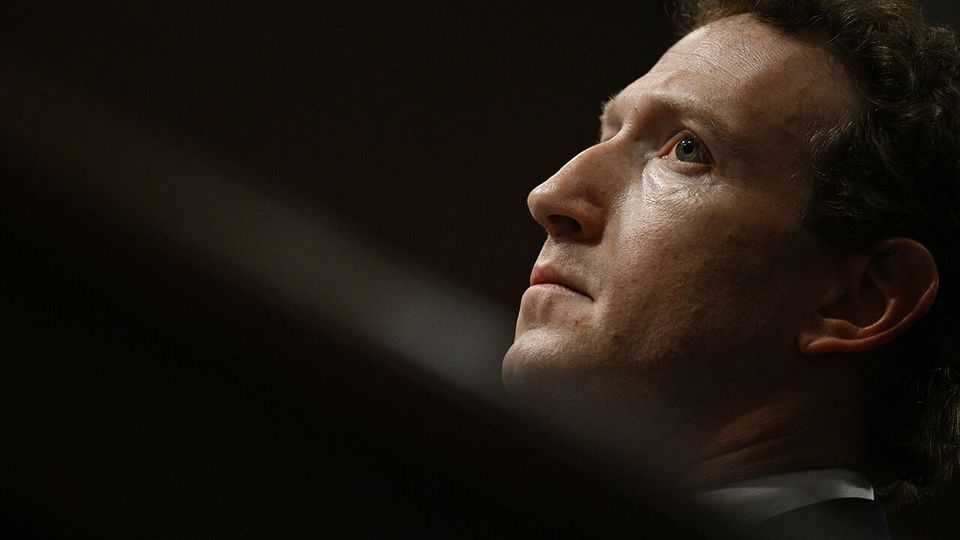

Meta’s blockbuster trial draws parallels to big tobacco
But investors aren’t panicking yet

Aug 20th 2026
IN EARLY October a sequel to “The Social Network”, a film about Mark Zuckerberg’s founding of Facebook, is scheduled for release. Called “The Social Reckoning”, it will dramatise the role of whistleblowers who alleged that the tech giant hid the fact that its products were harmful. Some of the characters involved will take part in a no less vivid drama involving Facebook, Instagram and their parent company, Meta, in a federal courtroom in Oakland, California. Oral arguments started on August 18th. Reckoning or not, the trial may be a blockbuster.
California, Colorado, Kentucky and New Jersey are leading a group of 29 states that are suing Meta over allegations that its platforms developed features harmful to children, and that it violated their privacy. In opening arguments, Megan O’Neill, a deputy attorney-general for California, said that Meta’s business model was to “hook the users, hold them for as long as they can, harvest their data and then hide the truth from the public.” Rob Bonta, California’s attorney-general, has described the case as Meta’s “tobacco moment”, likening the firm’s alleged deceptions to those that led to huge payouts by tobacco firms in the 1990s.
Paul Schmidt, a lawyer for Meta, told jurors that the company took its responsibility to young users seriously, adding that there was no clear link between youngsters’ social-media use and ill health. Meta is expected to fight efforts by the plaintiffs to turn the trial into a referendum on the impact of social media on children, focusing instead on the narrow legal issues in dispute. Its lawyers have asked why it is being singled out, when youngsters’ use of YouTube, owned by Google, and TikTok, created by China’s ByteDance, is even higher than it is of Instagram.
A lot is at stake. In a similar case brought by the government of New Mexico, a judge this month ordered Meta to pay almost $950m in penalties. The four states acting as plaintiffs in Oakland appear to be seeking more than 200 times as much if Meta loses the case, putting their estimate at $193bn—roughly equivalent to the firm’s revenue in 2025. If that were a benchmark for other states, it would devastate Meta.
Whether it comes to that is another matter, though. In emotive language, Ms O’Neill alleged that Meta particularly targeted young children. She frequently used the word “hooked”. But unlike a trial in Los Angeles in March, in which Meta and Google, were obliged to pay damages to a 20-year-old harmed by spending much of her life on social media, the Oakland case is not focused on addiction.
Instead it is what one of the attorneys-general calls “the largest consumer-protection lawsuit in American history”. Vincent Joralemon, of the University of California’s Berkeley Centre for Law & Technology, says the big question is whether or not Meta deceived the public about the impact of its products. That is similar to the tobacco cases. It also means whistleblower testimony is likely to be more relevant than thorny psychological debates about addiction, reckons Mr Joralemon.
Meta’s investors tend to think that the burden of proof on the deception charges is “quite high”, says Gil Luria of D.A. Davidson, an investment bank. Litigation risk has weighed on Meta’s valuation, contributing to an earnings ratio that is lower than those of its big-tech peers. But rather than fearing a giant payout, shareholders worry more about remedial changes that the prosecutors may seek if Meta loses in court, according to Mr Luria. Those include changes to features Meta, Google and TikTok use to keep user engagement high, such as “infinite scroll”, which continuously loads new posts. “If we didn’t have infinite scroll, we wouldn’t have as many ads,” Mr Luria says.
Even if Meta loses, it has scope for appeal. It could, for instance, do so on the grounds that it is protected by Section 230 of the Communications Act, which safeguards internet platforms from legal liability for content posted by third parties. It sought to use that argument to halt the Oakland trial before it started, but the judge ruled that the appeal was premature.
Public concern in America about the impact of social media on children is high, and being dragged through the courts may not help Meta’s image with parents. In order to head off similar worries about AI, on August 18th OpenAI launched ChatGPT for Teens, which strengthens guardrails for under 18-year-olds.
For all the attention the Meta trial will receive, court verdicts can have less of an impact than the headlines suggest. The tobacco industry agreed in a settlement of 1998 to shell out more than $200bn over 25 years. But such outcomes have a “disappointing history” in America, says Matthew Lawrence of the Emory University School of Law. “We can mitigate the harms of industries exploiting addiction, but we have not yet had great success in finding ways to eliminate the harms.” ■